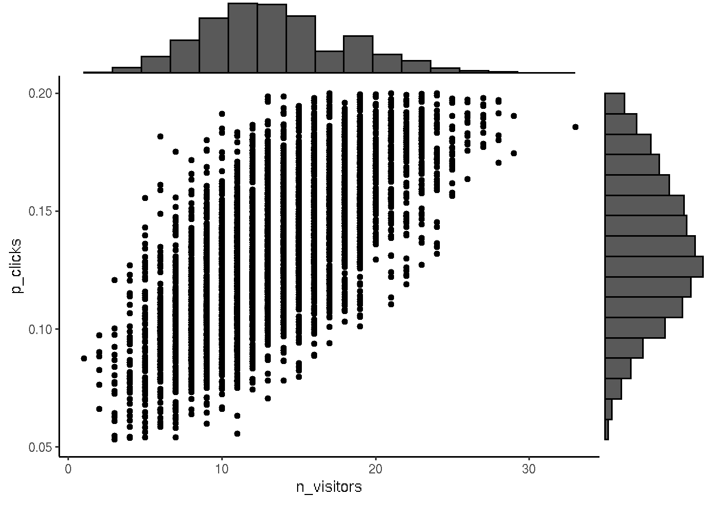
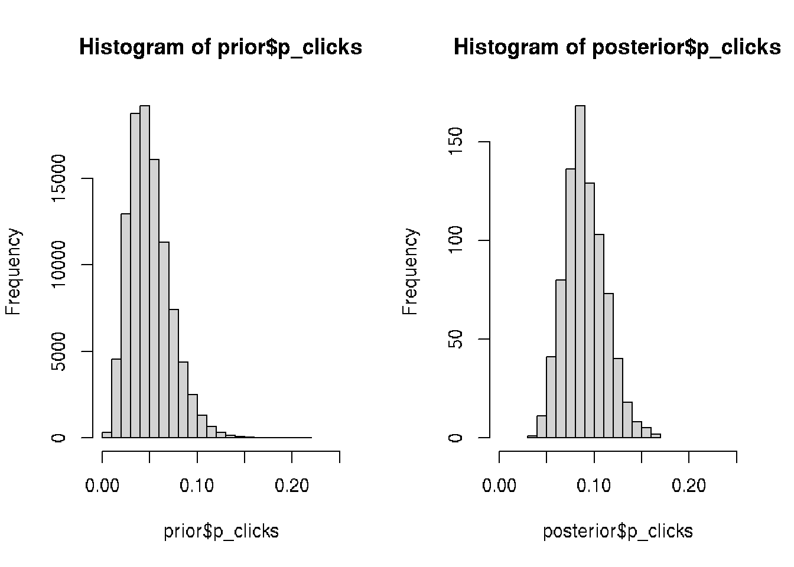
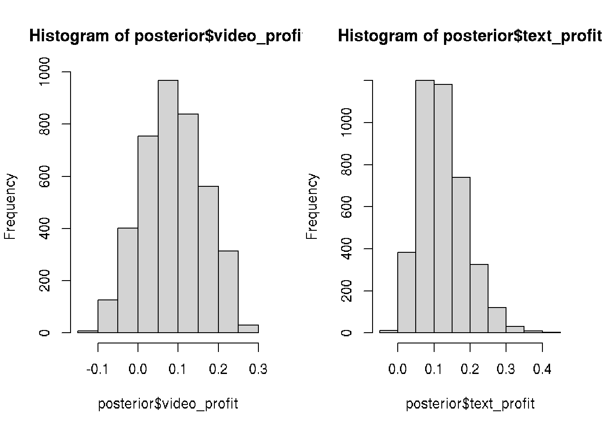

Chapter 22 Linear Regression
22.1 Linear regression - theory
Linear regression model is a line y=ax+b, where sum of distances between all y=axi+b and given yi (sum of squares) is minimal.
Assume that there is approximately a linear relationship between X and Y:
\[ Y \approx \beta_0 + \beta_1X\]
where \(\beta\)0 is an intercept and \(\beta\)1 is a slope
Parameters of the line could be calculated using least squares methods:
\[\beta_1 = \frac{\sum_{i=1}^{n} (x_i - \bar{x})(y_i - \bar{y})}{\sum_{i=1}^{n}{(x_i - \bar{x})^2}} \] \[\beta_0 = \bar{y} - \beta_1\bar{x} \]
22.2 Generate random data set for the linear model
Suppose we want to simulate from the following linear model:
y = \(\beta\)0 + \(\beta\)1x + \(\epsilon\),
where \(\epsilon\) ~ N(0,22). Assume x ~ N(0,12), \(\beta\)0 = 0.5, \(\beta\)1 = 2.
set.seed(20)
x <-rnorm(100)
e <- rnorm(100, 0, 2)
y <- 0.5 + 2*x + e
summary(y)## Min. 1st Qu. Median Mean 3rd Qu. Max.
## -6.4084 -1.5402 0.6789 0.6893 2.9303 6.5052plot(x,y)
22.3 Practical example
Practical example from Wikipedia
Set of data: (1,6), (2,5), (3, 7), (4,10)
x <- c(1,2,3,4)
y <- c(6,5,7,10)
plot(y~x, xlim=c(0,5), ylim=c(4,10))
abline(3.5, 1.4)
r <- lm(y~x)
segments(x, y, x, r$fitted.values, col="green")
We have to find the line corresponding to the minimal sum of errors (distances from the each point to this line):
1. For all points:
\[\beta_1 + 1\beta_2 = 6\]
\[\beta_1 + 2\beta_2 = 5\]
\[\beta_1 + 3\beta_2 = 7\]
\[\beta_1 + 4\beta_2 = 10\]
the least squares S:
\[S(\beta_1, \beta_2) = [6 - (\beta_1 + 1\beta_2)]^2 + [5 - (\beta_1 + 2\beta_2)]^2 + [7 - (\beta_1 + 3\beta_2)]^2 + [10 - (\beta_1 + 4\beta_2)]^2 = 4\beta_1^2 + 30\beta_2^2 + 20\beta_1\beta_2 - 56\beta_1 - 154\beta_2 + 210\]
The minimum is:
\[\frac{\partial{S}}{\partial{\beta_1}} = 0 = 8 \beta_1 + 60\beta_2 - 154\]
\[\frac{\partial{S}}{\partial{\beta_2}} = 0 = 20 \beta_1 + 20\beta_2 - 56\]
Result in a system of two equations in two unkowns gives:
\[\beta_1 = 3.5\]
\[\beta_2 = 1.4\]
The line of best fit:
\(y = 3.5 + 1.4x\)
All possible regression lines goes through the intersection point \((\bar{x}, \bar{y})\)
22.4 Mean squared error (MSE)
Standard error of train data
\[MSE = \frac{1}{n}\sum_{i=1}^{n}(y_i - \hat{f}(x_i))^2\]
Standard error of learn data
\[MSE = \frac{1}{n_o}\sum_{i=1}^{n_o}(y_i^o - \hat{f}(x_i^o))^2\]
22.5 Linear model in R
# Height and weight vectors for 19 children
height <- c(69.1,56.4,65.3,62.8,63,57.3,59.8,62.5,62.5,59.0,51.3,64,56.4,66.5,72.2,65.0,67.0,57.6,66.6)
weight <- c(113,84,99,103,102,83,85,113,84,99,51,90,77,112,150,128,133,85,112)
plot(height,weight)
# Fit linear model
model <- lm(weight ~ height) # weight = slope*weight + intercept
abline(model) # Regression line
# correlation between variables
cor(height,weight)## [1] 0.8848454# Get data from the model
#get the intercept(b0) and the slope(b1) values
model##
## Call:
## lm(formula = weight ~ height)
##
## Coefficients:
## (Intercept) height
## -143.227 3.905# detailed information about the model
summary(model)##
## Call:
## lm(formula = weight ~ height)
##
## Residuals:
## Min 1Q Median 3Q Max
## -16.816 -5.678 0.003 9.156 17.423
##
## Coefficients:
## Estimate Std. Error t value Pr(>|t|)
## (Intercept) -143.2266 31.1802 -4.594 0.000259 ***
## height 3.9047 0.4986 7.831 4.88e-07 ***
## ---
## Signif. codes: 0 '***' 0.001 '**' 0.01 '*' 0.05 '.' 0.1 ' ' 1
##
## Residual standard error: 10.89 on 17 degrees of freedom
## Multiple R-squared: 0.783, Adjusted R-squared: 0.7702
## F-statistic: 61.32 on 1 and 17 DF, p-value: 4.876e-07# check all attributes calculated by lm
attributes(model)## $names
## [1] "coefficients" "residuals" "effects" "rank" "fitted.values" "assign" "qr" "df.residual" "xlevels" "call" "terms" "model"
##
## $class
## [1] "lm"# getting only the intercept
model$coefficients[1] #or model$coefficients[[1]]## (Intercept)
## -143.2266# getting only the slope
model$coefficients[2] #or model$coefficients[[2]]## height
## 3.904675# checking the residuals
residuals(model)## 1 2 3 4 5 6 7 8 9 10 11 12 13 14 15
## -13.586376027 7.002990499 -12.748612814 1.013073510 -0.767861396 2.488783423 -5.272902901 12.184475869 -16.815524131 11.850836722 -6.083169400 -16.672535926 0.002990499 -4.434222250 11.309132932
## 16 17 18 19
## 17.422789545 14.613440486 3.317381064 -4.824689703# predict the weight for a given height, say 60 inches
model$coefficients[[2]]*60 + model$coefficients[[1]]## [1] 91.05384# Mean squared error (MSE)
predicted.weights <- predict(model, newdata = as.data.frame(weight))
mse <- mean(( weight - predicted.weights)^2, na.rm = TRUE)
mse## [1] 106.17722.6 Linear regression model for multiple parameters
22.7 Choosing explanatory variables for the model
In general, less MSE then better prediction. We can arrange variables by their importance to predict and choose the number of significant variables.
- run model with different number of variables.
- Arrange MSE for each variable.
- Compair MSE for different number of variables using t-test.
If difference is significant => use more variables.
In the same way we can compair different models.
library(mosaicData)
head(CPS85)## wage educ race sex hispanic south married exper union age sector
## 1 9.0 10 W M NH NS Married 27 Not 43 const
## 2 5.5 12 W M NH NS Married 20 Not 38 sales
## 3 3.8 12 W F NH NS Single 4 Not 22 sales
## 4 10.5 12 W F NH NS Married 29 Not 47 clerical
## 5 15.0 12 W M NH NS Married 40 Union 58 const
## 6 9.0 16 W F NH NS Married 27 Not 49 clerical# relation wage ~ education
# wage - response variable
# educ, exper, age are explanatory variables
# linear model
model1 <- lm(wage ~ educ, data = CPS85)
model2 <- lm(wage ~ educ + age, data = CPS85)
model3 <- lm(wage ~ educ + age + exper, data = CPS85)
pred1 <- predict(model1, newdata = CPS85)
pred2 <- predict(model2, newdata = CPS85)
pred3 <- predict(model3, newdata = CPS85)
# Compair MSE
mse1 <- mean(( CPS85$wage - pred1)^2, na.rm = TRUE)
mse2 <- mean(( CPS85$wage - pred2)^2, na.rm = TRUE)
mse3 <- mean(( CPS85$wage - pred3)^2, na.rm = TRUE)
mse <- data.frame(model_1 = mse1,
model_2 = mse2,
model_3 = mse3)
mse## model_1 model_2 model_3
## 1 22.51575 21.03578 21.0353# Using both educ and age variables reduese MSE => improve model, where
# adding exper does not improve model22.8 Assessment of model performance for categorical data.
Errors for categorical data can be calculated as number of errors prediction model makes.
Test whether predicted values match actual values.
Likelihood: extract the probability that the model assigned to the observed outcome.
22.9 Confidence intervals for linear model
# 0. Build linear model
data("cars", package = "datasets")
model <- lm(dist ~ speed, data = cars)
# 1. Add predictions
pred.int <- predict(model, interval = "prediction")## Warning in predict.lm(model, interval = "prediction"): predictions on current data refer to _future_ responsesmydata <- cbind(cars, pred.int)
# 2. Regression line + confidence intervals
library("ggplot2")
p <- ggplot(mydata, aes(speed, dist)) +
geom_point() +
stat_smooth(method = lm)
# 3. Add prediction intervals
p + geom_line(aes(y = lwr), color = "red", linetype = "dashed")+
geom_line(aes(y = upr), color = "red", linetype = "dashed")## `geom_smooth()` using formula 'y ~ x'## Warning in grid.Call.graphics(C_polygon, x$x, x$y, index): semi-transparency is not supported on this device: reported only once per page
22.10 Practical examples for linear model regression
In this simple example we have 6 persons (3 males and 3 femails) and their score from 0 to 10.
We want to build a model to see the dependence of score on gender: score ~ gender + \(\epsilon\), where \(\epsilon\) is an error
# create data frame for the dataset
df = data.frame(gender=c(rep(0,3), rep(1,3)), score=c(10,8,7, 1,3,2))
df## gender score
## 1 0 10
## 2 0 8
## 3 0 7
## 4 1 1
## 5 1 3
## 6 1 2# build linear model
x = lm(score ~ gender, df)
summary(x)##
## Call:
## lm(formula = score ~ gender, data = df)
##
## Residuals:
## 1 2 3 4 5 6
## 1.667e+00 -3.333e-01 -1.333e+00 -1.000e+00 1.000e+00 1.110e-16
##
## Coefficients:
## Estimate Std. Error t value Pr(>|t|)
## (Intercept) 8.3333 0.7454 11.180 0.000364 ***
## gender -6.3333 1.0541 -6.008 0.003863 **
## ---
## Signif. codes: 0 '***' 0.001 '**' 0.01 '*' 0.05 '.' 0.1 ' ' 1
##
## Residual standard error: 1.291 on 4 degrees of freedom
## Multiple R-squared: 0.9002, Adjusted R-squared: 0.8753
## F-statistic: 36.1 on 1 and 4 DF, p-value: 0.003863